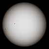

star

Definition: A star is an astronomical object comprising a luminous spheroid of plasma held together by self-gravity. The nearest star to Earth is the Sun. Many other stars are visible to the naked eye at night, but their immense distances from Earth make them appear as fixed points of light. The most prominent stars have been categorised into constellations and asterisms, and many of the brightest stars have proper names. Astronomers have assembled star catalogues that identify the known stars and provide standardized stellar designations. The observable universe contains an estimated 1022 to 1024 stars. Only about 4,000 of these stars are visible to the naked eye, all within the Milky Way galaxy.
Source: Wikipedia
Wikipedia Page (Something wrong with this association? Let us know.)
Wikidata Page (Something wrong with this association? Let us know.)